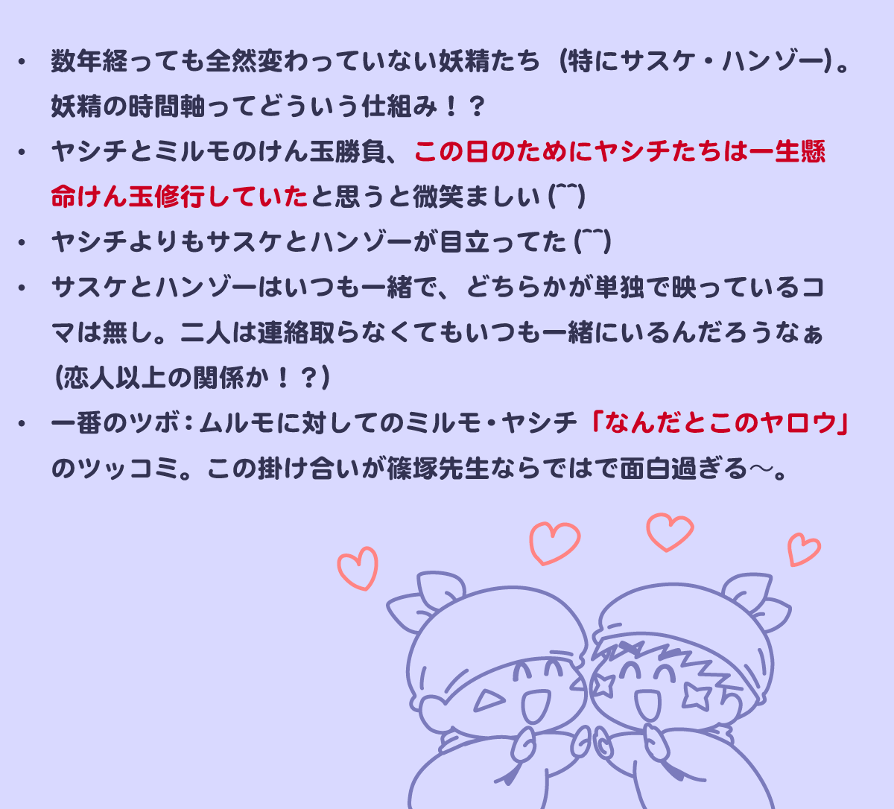
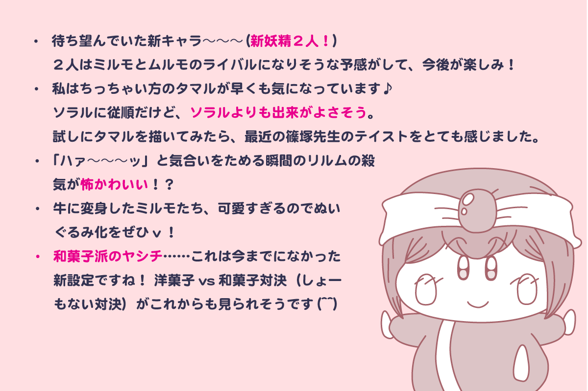
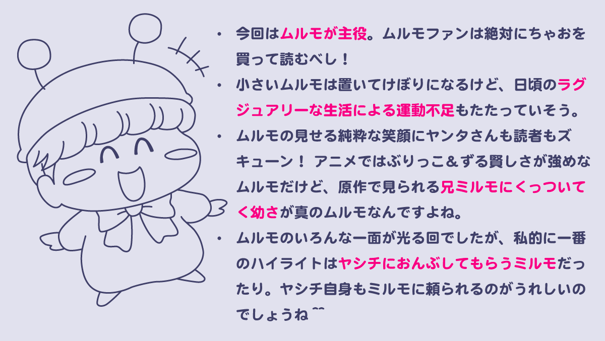
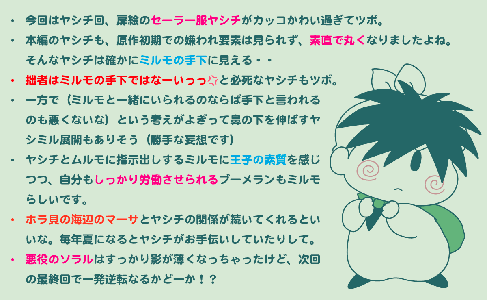
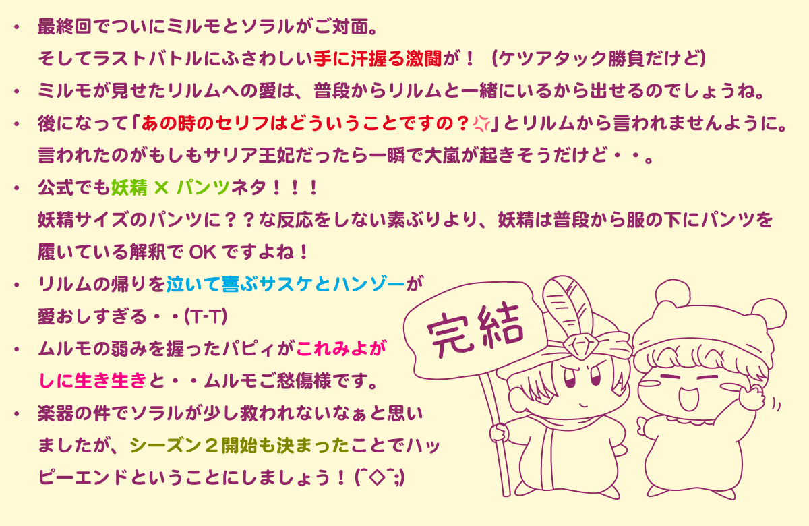

ちゃお２０２６年４月号から完全新作として復活連載がスタートした『ミルモでポン！にゅ〜』が、８月号で無事最終回を迎えました（全５話）
妖精界を舞台にした新たなストーリーで、人間界での出来事との関連など、いろんな設定も描かれました。
そして人気のためシーズン２の連載もすでに決まっていて、この先も楽しみです！
以下はXで載せていた各話のちょっとした感想です。
（コミックス発売待ちの方はネタバレになってしまうのでこの先閲覧禁止です！！！）
めちゃくちゃ浅い感想で恐縮ですが、毎月新しいお話を読んで感想で盛り上がることができるのは毎月連載ならではの醍醐味ですね。
↓
↓
↓
↓
↓
↓
それでは１話目から感想記事を載せていきます。
第１話感想

第２話感想

第３話感想

第４話感想

第５話感想

コミックスが発売されたらまた別記事でレポートしたいと思います。
これからもミルモたちの活躍から目が離せないですね！！
(2026/8/4)